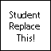

Page 32: TSL Exercise
I’d like you to try TSL programming, even though we didn’t give you very much detail. (I might make a video.) So, we’ll have low expectations.
There are two different things (#3 is how to get a “creative” score):
- (standard) Make something using TSL Graph. You can take a screenshot of what you made. Replace the
tsl-student.pngfile in thefor_studentsdirectory with your screen shot. - (advanced) Make a shader using TSL and show it on the objects in the box below. It is OK if what you put into the program is from #1.
- (creative) Do something cool with the shader that you made in #2.
Note: you must try TSL Graph - you cannot earn advanced points without earning the standard points first! Make sure you provide your picture!
When you replace tsl-student.png, it will show here:

If you are going to try to write some JavaScript in the class framework, put it here:
view - look at the box and experiment with it
examine - look at the code for the box
edit - change the box's content
rubric - several steps are suggested in the rubric page - form elements on page in rubric
06-32-01.html 06-32-01.js
| Kind
Kind of rubric items: standard - expected from all students advanced - used to get a better grade creative - an opportunity to do something creative optional - not required, but encouraged |
Description | |
| standard | TSL Graph Screenshot | |
| advanced | TSL used inside of framework | |
| creative | Cool shader with explanation |
If you want a creative score, you need to explain what you did and why you think it is cool:
If You Need Ideas
If you want inspiration for shaders to write, here are some resources that have examples and galleries. While these usually involve tools that are either deprecated or don’t interface well with what we’re doing in class, you can still find lots of interesting examples.
Here are some sources:
Shader Programming
Now you have done shader programming in the “modern” way as well as the old way. Hopefully, over the course of the workbook, you’ve learned enough about shaders to do something cool with them.
Next: Page 33 - Last Page (rubric)